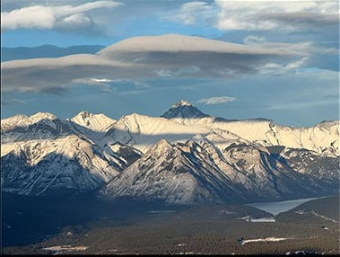

BANFF
Located in the Canadian Rockies in Alberta, Banff National Park is Canada’s oldest national park, established in 1885. It spans over 6,600 square kilometers and is renowned for its breathtaking landscapes, including towering mountains, lush forests, glacial lakes (like the iconic Lake Louise), and abundant wildlife such as elk, and mountain goats. The park offers outdoor activities like hiking, skiing, and canoeing, making it a year-round destination. Its picturesque town of Banff serves as a hub for visitors, offering amenities and access to the park’s natural wonders. Banff is also a UNESCO World Heritage Site as part of the Canadian Rocky Mountain Parks. Here are some of the sights to see in Banff.
SYDNEY OPERA HOUSE

The Sydney Opera House, located in Sydney, Australia, is an iconic architectural masterpiece designed by Danish architect Jørn Utzon and opened in 1973. Recognized as a UNESCO World Heritage Site, its unique sail-like design has made it a symbol of Australia. The venue hosts a wide range of performances, including opera, theater, and concerts, attracting millions of visitors annually. Situated on Bennelong Point, it offers stunning views of Sydney Harbour and the Harbour Bridge, making it a must-see destination for culture and architecture enthusiasts. Here is the website to the Opera House to see all of their events.
SYDNEY ZOO

Sydney Zoo, located in Western Sydney, is a modern wildlife park that provides immersive experiences with both local and exotic animals. Opened in 2019, the zoo features state-of-the-art enclosures and promotes animal welfare and sustainability. Visitors can encounter Australian wildlife like kangaroos, koalas, and emus, as well as international species such as lions, giraffes, and elephants. The zoo emphasizes education and conservation, offering interactive exhibits and cultural insights. It is a family-friendly destination. Here is a link to see everything there is to know about the Zoo.